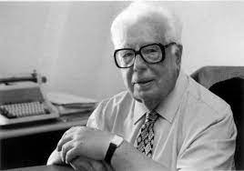

Francisco Fernández del Riego naceu en Villanueva de Lorenzana,Lugo o 7 de Enero de 1913.
Foi un escritor e político español que desarrollou dende a década de 1930 un traballo constante e reconocido a favor da cultura galega, o que fixo que él unha das personalidades mais destacadas de Galicia.
Foi un dos principales artífices da editorial "Galaxía" e director, xunto a Ramón Píñeiro López, da revista Grial no seus primeiros cen números. Ensallista e narrador, foi un autor de unha extensa obra centrada sobre todo na cultura e na literatura galega.
Ingrsou en 1960 na Real Academia Galega con un discurso titulado "Un país y una cultura" y "La idea de Galicia en nuestros escritores".
Como unha das principales figuras de Galicia, foi reconocido con numerosos galardóns: